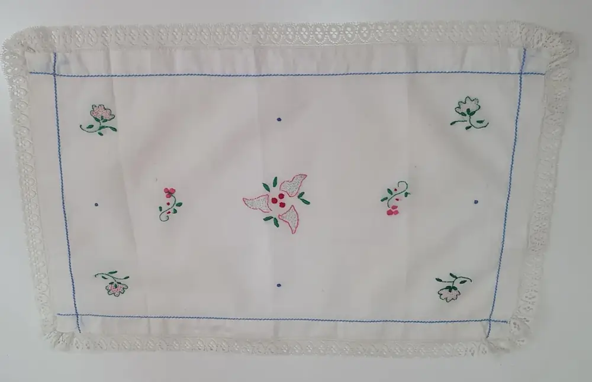
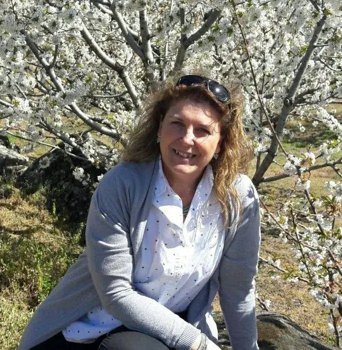
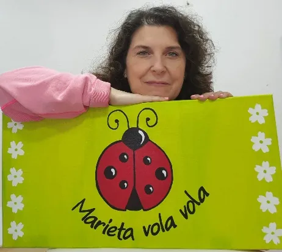
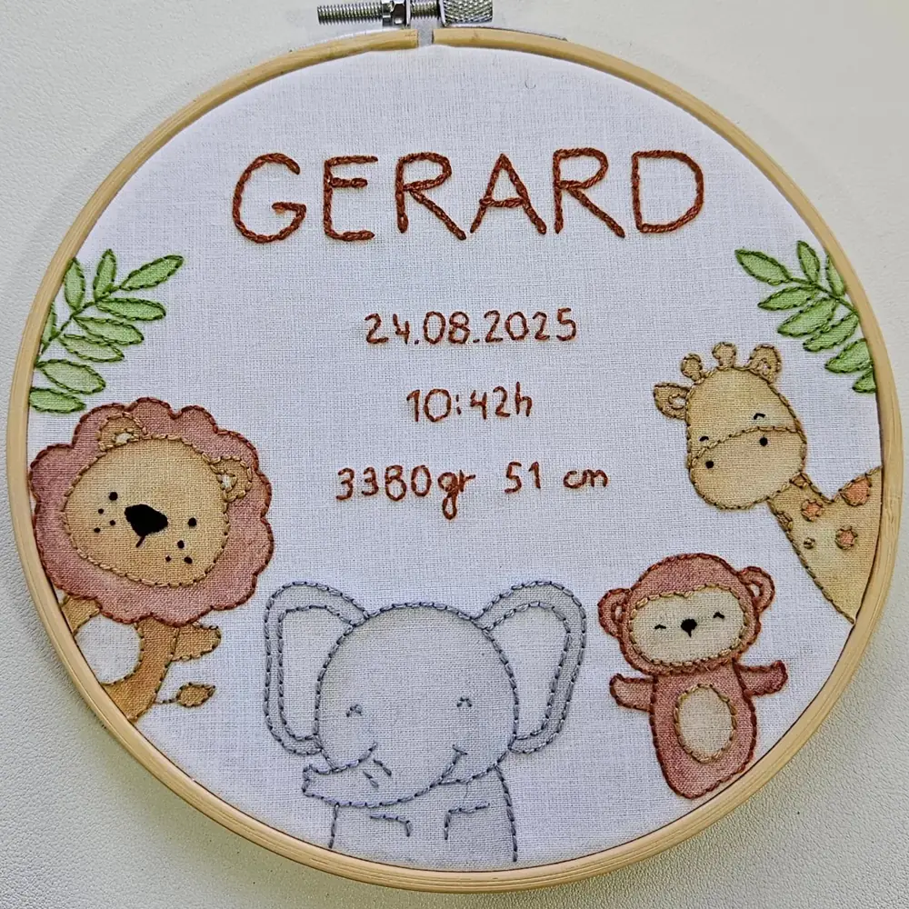
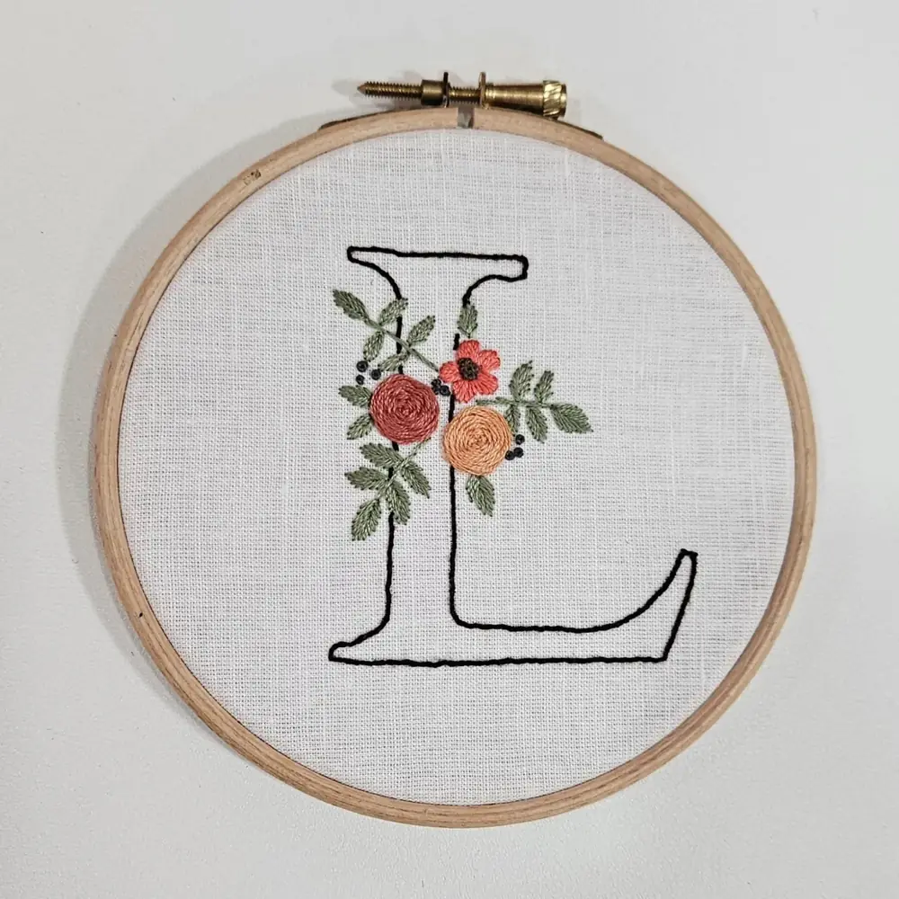

10 años
Los sábados en casa de la Sra. Teresina
Mi madre me llevaba a bordar cada sábado a «Ca la Sra. Teresina». De ella me ha quedado la manía de no poder empezar una labor sin lavarme antes las manos.


La artesana que está detrás de Marieta Vola Vola.
De niña solo me quedaba quieta cuando salía al balcón y me entretenía con las mariquitas: me las ponía en la mano y las hacía volar.
«Marieta» significa mariquita en catalán, y hay una canción infantil que se llama «Marieta vola vola». Me gustó tanto que la adopté como nombre artístico.
Estudié Turismo y, aunque ejercí poco, me apasiona viajar con mi familia y mis amigos. Mi otra gran pasión es bordar, la costura, el punto de cruz y las manualidades en general.

10 años
Mi madre me llevaba a bordar cada sábado a «Ca la Sra. Teresina». De ella me ha quedado la manía de no poder empezar una labor sin lavarme antes las manos.

25 años
Mi madre iba a manualidades con su profesora, y ahora amiga, Carme Josa de Pinzellart. Allí descubrí todo un mundo: pintura sobre madera, yeso y cerámica, decoupage y reciclaje.

Hoy
Me entusiasman todas las manualidades, pero ahora estoy más dedicada a bordar. Gracias al bordado transformo mis ideas en piezas únicas, 100% artesanales, hechas con mucho mimo.
Para mí el bordado tiene muchísimos beneficios: baja el estrés, cultiva la paciencia y la perseverancia, ayuda a concentrarse y despierta la creatividad.
Y además une a la gente, porque no hay edad ni condición para empezar. Si tienes cualquier pregunta, escríbeme y estaré encantada de ayudarte.

Escríbeme por WhatsApp y te respondo yo misma, sea para un taller, un encargo o la comunidad.